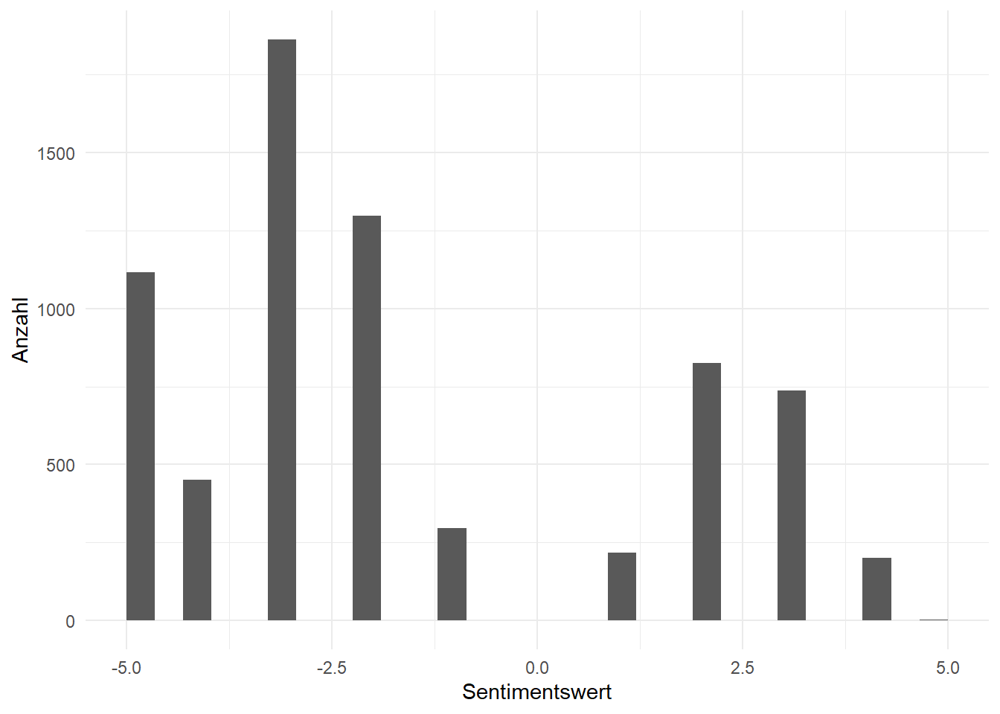
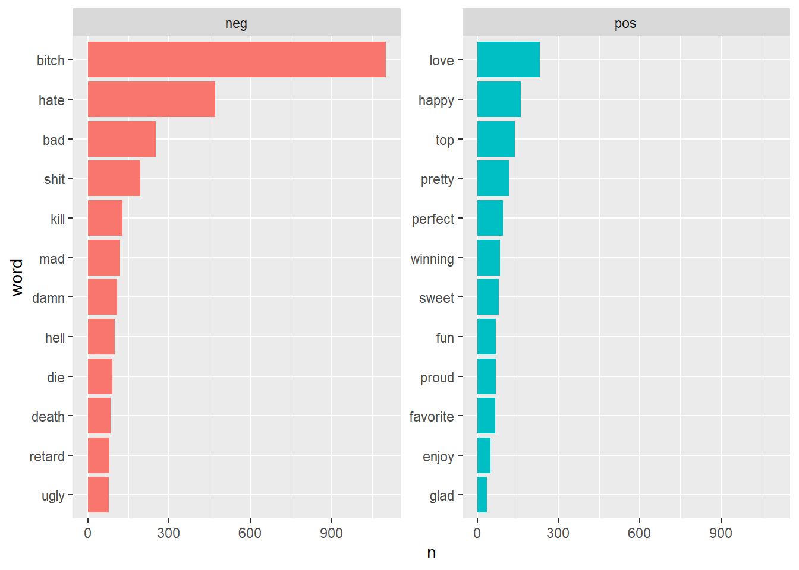

Ziel dieser Projektarbeit ist es, mittels Textklassifikation Tweets zu Analysieren. Ergebnis soll eine Klassifikation sein, bei der zwischen Hatespeech und keinem Hate Speech klassifiziert wird.
Rows: 5593 Columns: 3
── Column specification ────────────────────────────────────────────────────────
Delimiter: ","
chr (2): tweet, class
dbl (1): id
ℹ Use `spec()` to retrieve the full column specification for this data.
ℹ Specify the column types or set `show_col_types = FALSE` to quiet this message.
Im ersten Schritt entferne ich Patterns aus den Tweets, die für die Analyse keinen Wert haben. Anhand der vorhandenen Links kann man m.M.n definitiv nicht vorhersagen, ob es sich um Hatespeech handelt.
# A tibble: 78,321 × 3
id class word
<dbl> <chr> <chr>
1 0 other mayasolovely
2 0 other as
3 0 other a
4 0 other woman
5 0 other you
6 0 other shouldn't
7 0 other complain
8 0 other about
9 0 other cleaning
10 0 other up
# ℹ 78,311 more rows
length(unique(d_hate_token$id))
[1] 5593
Entfernung Stopwords
Als nächstes Entferne ich Stopwords, da auch die keinen Mehrwert besitzen bei der Klassifikation
# A tibble: 40,418 × 3
id class word
<dbl> <chr> <chr>
1 0 other mayasolovely
2 0 other woman
3 0 other complain
4 0 other cleaning
5 0 other house
6 0 other amp
7 0 other trash
8 40 other momma
9 40 other pussy
10 40 other cats
# ℹ 40,408 more rows
Sentimentannalyse
Jetzt beginne ich mit der Sentimentanalyse, um mir einen weiteren Überblick über die Daten zu verschaffen. Dafür benutze ich 3 Sentimentwörterbücher, die ich dann kombiniere.
Warning in left_join(combined_analysis, sent_bing, by = "word"): Detected an unexpected many-to-many relationship between `x` and `y`.
ℹ Row 730 of `x` matches multiple rows in `y`.
ℹ Row 20 of `y` matches multiple rows in `x`.
ℹ If a many-to-many relationship is expected, set `relationship =
"many-to-many"` to silence this warning.
Warning in inner_join(., combined_analysis): Detected an unexpected many-to-many relationship between `x` and `y`.
ℹ Row 3 of `x` matches multiple rows in `y`.
ℹ Row 136 of `y` matches multiple rows in `x`.
ℹ If a many-to-many relationship is expected, set `relationship =
"many-to-many"` to silence this warning.
nrow(d_hatetoken_SA)
[1] 7004
length(unique(d_hatetoken_SA$id))
[1] 1668
d_hatetoken_SA
# A tibble: 7,004 × 6
id class word value sentiment.y neg_pos_bing
<dbl> <chr> <chr> <dbl> <chr> <chr>
1 0 other complain -2 negative neg
2 0 other complain -2 negative neg
3 0 other complain -2 negative neg
4 70 other scream -2 negative neg
5 70 other scream -2 negative neg
6 70 other scream -2 negative neg
7 70 other scream -2 negative neg
8 70 other scream -2 negative neg
9 75 other adorable 3 positive pos
10 75 other adorable 3 positive pos
# ℹ 6,994 more rows
`stat_bin()` using `bins = 30`. Pick better value with `binwidth`.

d_hatetoken_SA %>%count(word, neg_pos_bing, sort =TRUE) %>%ungroup() %>%group_by(neg_pos_bing) %>%slice_max(n, n =12)%>%ungroup() %>%mutate(word =reorder(word, n)) %>%ggplot(aes(n, word, fill = neg_pos_bing)) +geom_col(show.legend =FALSE) +facet_wrap(~neg_pos_bing, scales ="free_y")

Modellierung - Tidymodels
Recipe Erstellung
Im ersten Schritt erstelle ich mein Recept für die Modelle. Hierbei nutze ich step_stopwords, um Stopwörter zu entfernen, step_stem, um Wortstämme zu analysieren, step_tfidf zur tfidf implementierung und step_text_normalization zur weiteren Textbereinigung.
Entschieden habe ich mich für ein NaiveBayes und ein XgBoost Modell. Beide definiere ich hier. Beim XgBoost Modell tune ich Parameter im folgenden. Trees habe ich auf 1000 gesetzt, um overfitting zu verhindern.
Die Modelle schneiden beiede eigentlich gut ab. Klar erkennbar ist aber, dass die XgBoost Modelle besser performen als die naive_bayes. Im nächsten Schritt suche ich daher das beste Modell raus.
Die Metrics hierbei sind wirklich sehr gut. Das XgBoost Modell schneidet hierbei sehr gut ab.
Klassifikation mit dem Facebook Roberta Modell
Zur Benutzung des Facebook Roberta Modells benötige ich eine Python venv, welche ich außerhalb des R Projekts in Python erstellt habe. Hierbei benutze ich den Befehl pipeline aus der transformers Library, um das Modell zu importieren und zum Predicten zu nutzen.
Hier nutze ich die pipeline, um das Modell zu importieren
import pandas as pdimport tensorflow as tf
WARNING:tensorflow:From C:\Users\finnw\Desktop\Env\myenv\Lib\site-packages\keras\src\losses.py:2976: The name tf.losses.sparse_softmax_cross_entropy is deprecated. Please use tf.compat.v1.losses.sparse_softmax_cross_entropy instead.
from transformers import pipelineclassifier = pipeline("text-classification", model="facebook/roberta-hate-speech-dynabench-r4-target")
Bereitstellung der Tweets für python
Tweets <- Hate_test$tweet
Hier lasse ich das Modell laufen
tweets = r.Tweetsresults = classifier(tweets)
Speicherung der Ergebnisse
hierfür nehme ich die Python Prediction und füge sie mit dem test Datensatz zusammen, um diese dann mit den originalen Werten zu vergleichen.
Zusammenfassend kann man also sagen, dass das XgBoost Modell auf diesen Daten immer noch besser performt, als das Roberta Modell. Beide performen jedoch sehr gut und haben ihre eigenen Vorteile. Das Roberta Modell läuft bei mir z.B. weitaus schneller durch. Auch das Naive Bayes Modell passt solide zu dem Datensatz, performt aber allgemein schlechter. Die Aufarbeitung der Daten im ersten Schritt (entfernung der https etc) und die tfidf Implementierung haben hier bei der Analyse den größten Unterschied gemacht und für gute Ergebnisse gesorgt.